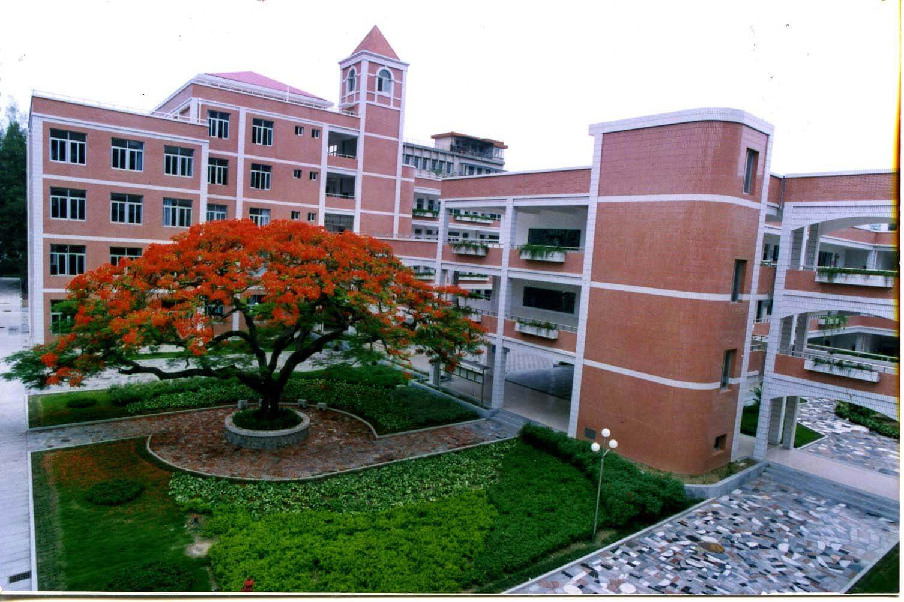
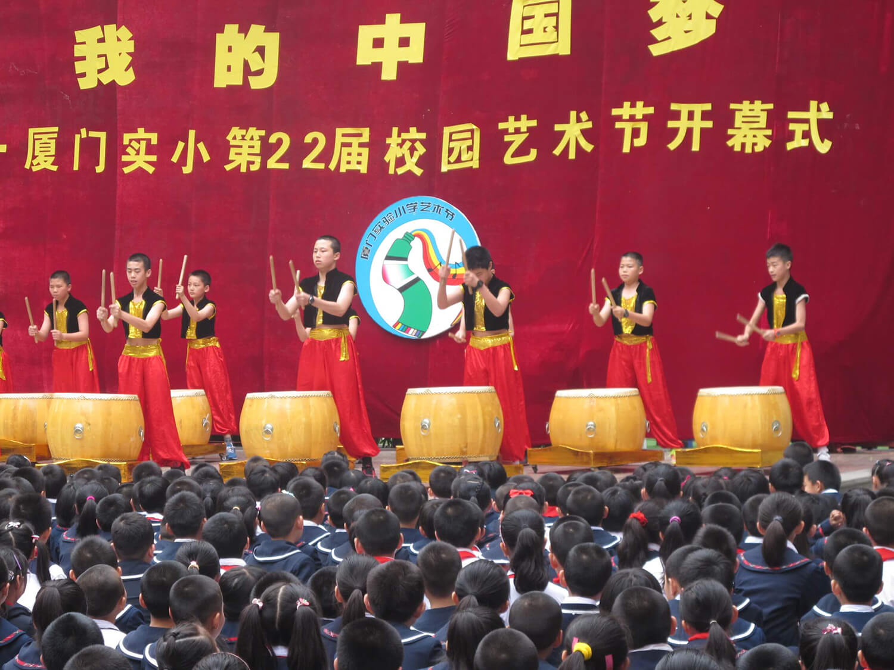
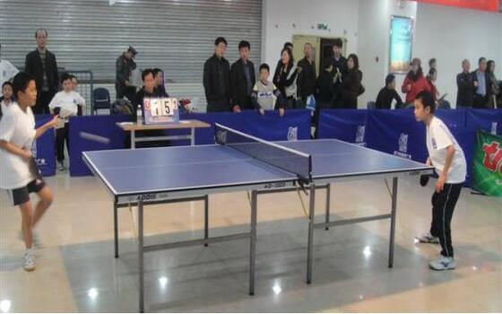
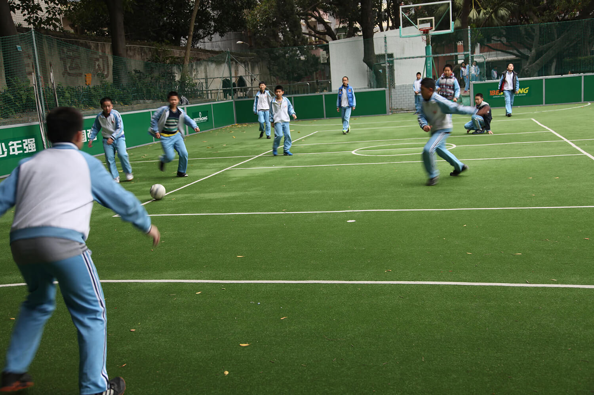
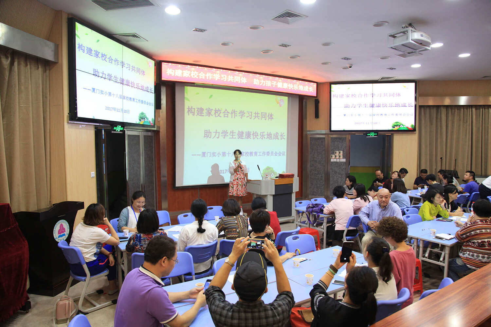
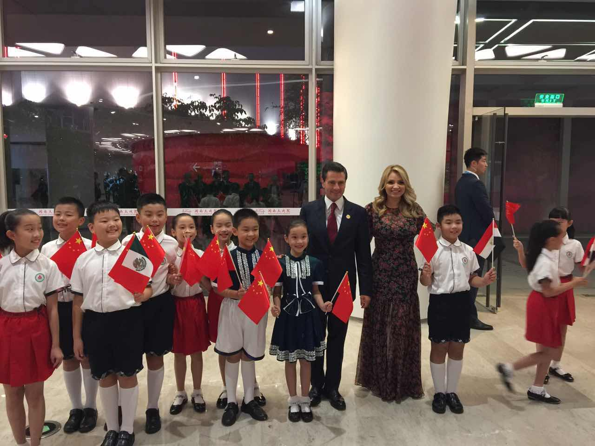

-
 全国文明单位 National Civilized Unit
全国文明单位 National Civilized Unit -
全国教育系统先进集体 National Education System Advanced Unit
-
全国精神文明建设先进单位奖牌 National Advanced Spiritual Civilized Unit
-
全国巾帼文明岗 National Women Civilization Station
-
全国依法治校示范校National Model School Ruled by Law
-
 全国家庭教育工作先进集体National Family Education Advanced Unit
全国家庭教育工作先进集体National Family Education Advanced Unit -
省示范小学Provincial Model Primary School
-
 省实施素质教育先进校Provincial Implementation of Quality-Oriented Education Advanced School
省实施素质教育先进校Provincial Implementation of Quality-Oriented Education Advanced School -
省师德建设先进集体2011 Provincial Teachers Moral Construction Advanced Unit in 2011
-
省先进基层党组织 Provincial Advanced Basic-level Party Organization
-
省义务教育管理标准化学校 Provincial Compulsory Education Management Standard School
-
省岗位练兵先进单位 Provincial Teaching Training Activity Advanced Unit
-
省党政工共建“先进教工之家” Provincial Advanced Staff Family in Fujian Party Administration Labor Union
-
省青少年校园足球示范校 Provincial Teenager Campus Football Model School
-
省青少年科技教育示范校 Provincial Teenager Science and Technology Education Model School
-
多功能教室 Multifunctional Classroom
-
少先队部 Young Pioneers Room
-
图书馆 Library
-

校园一角 A Corner of School
-
校园一角 A Corner of School--the Oldest tree
-
校园一角 A Corner of School--Statue of Physicist Einstein
-
心灵家园 Spiritual Land
福建省厦门实验小学学校教学改革一直走在全市乃至全省前列。当前,学校以学生核心素养发展为引领,致力于多元立体课程建设和课程改革,探索出了国家课程校本化的路子,开发了具有学校特色和文化传统的校本课程,创新综合实践课程组织方式。在学科教学中,紧紧围绕学生发展核心素养培养,开展课堂教学改革实践。坚持精准教学理念,积极推进有针对性的校本作业改革实践;深化信息技术与学科教学深度融合实践,探索建立线上线下相互支持的教与学方式的改革实践;大胆创新评价方式,基于数据的质量监控,引领教学变革。
-
 五年级走进科技馆 Students in Grade 5 Visit Xiamen Science and Technology Museum
五年级走进科技馆 Students in Grade 5 Visit Xiamen Science and Technology Museum -
走进植物园上课 Students Visit Xiamen Botanic Garden
-
走进美术馆上课 Students Visit Xiamen Art Museum
-
福建省电视台报道我校选修课程做法 Our optional course reported on Fujian TV
-
多彩陶艺作品 Colorful Pottery Works
-
花艺课 Flower Art Class
-
开心农场 Happy Farm
-
空手道国家外籍教练莅临我校 National Karate Coach Visits Our School.
-
 快乐剪纸 Happy Paper-Cut Class
快乐剪纸 Happy Paper-Cut Class -
趣味数学真好玩Fun Maths Class with Rubik's Cube
-
城市学校少年宫 the Youth Palaces of Urban School
-
故事爸爸妈妈进课堂 Parents teaching lessons in the school
-
读书节开幕式 the Opening Ceremony of Reading Festival
-
睡衣读书会 Reading Salon in Pajamas
-
 科技节“机器人制作比赛” Competition of Making Robots in Science and Technology Festival
科技节“机器人制作比赛” Competition of Making Robots in Science and Technology Festival -
 科技节开幕式精彩演出 Performances on the Opening Ceremony of Science and Technology Festival
科技节开幕式精彩演出 Performances on the Opening Ceremony of Science and Technology Festival -
 广播操比赛 Broadcast gymnastics competition
广播操比赛 Broadcast gymnastics competition -
 广播操比赛Broadcast gymnastics competition
广播操比赛Broadcast gymnastics competition -
 体育节开幕式 the Opening Ceremony of Sports Festival
体育节开幕式 the Opening Ceremony of Sports Festival -
 校运会剪影 a sketch of the Sports Festival
校运会剪影 a sketch of the Sports Festival -
 校运会剪影 a sketch of the Sports Festival
校运会剪影 a sketch of the Sports Festival -
 校运会剪影 a sketch of the Sports Festival
校运会剪影 a sketch of the Sports Festival -
艺术节画展 the show of painting on Art Festival
-
 艺术节开幕式 the Opening Ceremony of Art Festival
艺术节开幕式 the Opening Ceremony of Art Festival -
 艺术节陶泥比赛 the Competition of making clay sculpture
艺术节陶泥比赛 the Competition of making clay sculpture -
 艺术节现场绘画比赛 the Competition of Improvisational painting
艺术节现场绘画比赛 the Competition of Improvisational painting
-

鼓艺队
-
管乐队 Orchestra Wind Band
-
合唱队 Chorus Club
-
健美操队 Aerobics Dancing Club
-

乒乓球队
-
书法社团
-
舞蹈队
-

足球队
我校德育工作以立德树人为根本任务,确立了“全员育人"的理念。德育工作中,以社会主义核心价值观为引领,创新德育工作方式,整合德育工作资源,把中华民族传统美德教育和民族精神教育贯穿于德育工作的全过程,把社会主义核心价值观的培育与践行渗透进校园文化、体现在常规管理、养成于道德实践中。积极致力于家校合作学习共同体机制建设的探索与实践,构建家校社德育网络,拓宽德育实践活动,举办冬夏令营、假日小队等社会实践活动,组织开展赴澳大利亚、新加坡、台湾、河南等地的游学活动,为学生搭建了成长、锻炼的平台,让学生在实践、体验中,培育文明素养、社会公德和社会实践能力,全面提高学生整体素质.
-
劳动实践夏令营
-
 行军拉练
行军拉练 -
 军营中的小战士
军营中的小战士
-
 参观澳大利亚Kingsford Smith学校的乐器室 Visting the Room of Music Instruments in Kingsford Smith School in Australia
参观澳大利亚Kingsford Smith学校的乐器室 Visting the Room of Music Instruments in Kingsford Smith School in Australia -
 与澳大利亚Kingsford Smith的小小讲解员合影 With the Young Explainer of Kingsford Smith School in Australia
与澳大利亚Kingsford Smith的小小讲解员合影 With the Young Explainer of Kingsford Smith School in Australia -
 与堪培拉文法学校的孩子亲密合影 With Children from Grammar School in Canberra
与堪培拉文法学校的孩子亲密合影 With Children from Grammar School in Canberra -
 领略河南嵩山少林寺 In Shaolin Temple in Songshan
领略河南嵩山少林寺 In Shaolin Temple in Songshan -
 与河南实小的孩子亲密合影 With the Children of Henan Experimental Primary School
与河南实小的孩子亲密合影 With the Children of Henan Experimental Primary School -
 与河南小伙伴一起游览嵖岈山国家地质公园保护区 Visiting the Chaya Mountain National Geological Park with the children from Henan Experimental Primary School
与河南小伙伴一起游览嵖岈山国家地质公园保护区 Visiting the Chaya Mountain National Geological Park with the children from Henan Experimental Primary School -
 我校和台湾足球队员合影 group photo with the footballers of the school in Taiwan
我校和台湾足球队员合影 group photo with the footballers of the school in Taiwan -
首次赴台考察交流 the First Exchange with Schools in Taiwan
-
 美国校长来我校访问交流 American Headmasters Visit Our School
美国校长来我校访问交流 American Headmasters Visit Our School -
 美国校长来我校访问交流 American Headmasters Visit Our School
美国校长来我校访问交流 American Headmasters Visit Our School -
 美国校长来我校访问交流 American Headmasters Visit Our School
美国校长来我校访问交流 American Headmasters Visit Our School -
 新加坡、香港学校来我校交流 Representatives from the Schools of Singapore and Hong Kong Visit Our School
新加坡、香港学校来我校交流 Representatives from the Schools of Singapore and Hong Kong Visit Our School -
与新加坡友诺小学师生一起快乐游戏 Our Students Playing Games With Teachers and Students From Younuo Primary School in Singapore
-
 与新加坡励众小学黄校长合影 Our Students With the headmaster of Horizon Primary School in Singapore
与新加坡励众小学黄校长合影 Our Students With the headmaster of Horizon Primary School in Singapore -
 我校出访师生代表与新加拨励众小学师生代表合影 the representatives of Xiamen Experimental Primary School and the Representatives of Lizhong Primary School in Singapore
我校出访师生代表与新加拨励众小学师生代表合影 the representatives of Xiamen Experimental Primary School and the Representatives of Lizhong Primary School in Singapore
-
 学做月饼 Learning how to make mooncakes
学做月饼 Learning how to make mooncakes -
 爱心宣传Volunteer service
爱心宣传Volunteer service -
上街开展“地球熄灯一小时”宣传活动 Publicity of Earth Hour
-
 敬老院送温暖 Giving presents and helping the aged in geracomium
敬老院送温暖 Giving presents and helping the aged in geracomium
-
 梦想嘉年华，放飞中国梦 Carnival for China Dream
梦想嘉年华，放飞中国梦 Carnival for China Dream -
 爱地球，爱厦门——纪念第45个世界地球日主题活动 Love the Earth, Love Xiamen---the 45th anniversary of World Earth Day
爱地球，爱厦门——纪念第45个世界地球日主题活动 Love the Earth, Love Xiamen---the 45th anniversary of World Earth Day -
 参加”守护白海豚，国乒在行动“活动 Protecting White Dolphins Activity
参加”守护白海豚，国乒在行动“活动 Protecting White Dolphins Activity -
 参加市公祭活动 Participating in the Public Memorial Ceremony
参加市公祭活动 Participating in the Public Memorial Ceremony -
 母亲节献给妈妈的爱 Activities on Mothers' Day
母亲节献给妈妈的爱 Activities on Mothers' Day -
 在警备区举行社区好孩子活动 Praise of Excellent Students in Army Community
在警备区举行社区好孩子活动 Praise of Excellent Students in Army Community -

家校合作——家委会议 Corporation between School and Family---having a meeting with representatives of parents
-
积极开展“云课堂”的研究，IPAD进课堂 Research on Cloud Class & IPAD Used in Class
-
 承办“第二届闽苏两省中小学名师教学主张展示与交流活动” We held the Second Fujian and Jiangsu Province Star Teachers' Teaching Assertion and Exchange Activity
承办“第二届闽苏两省中小学名师教学主张展示与交流活动” We held the Second Fujian and Jiangsu Province Star Teachers' Teaching Assertion and Exchange Activity -
积极组织读书沙龙提升教师理论素养 Reading Salons to Enhance Teachers' Theory Quality
-
 青年教师在教学比武中更快成长 Young Teachers Improve Their Teaching Skills Through Teaching Competitions,
青年教师在教学比武中更快成长 Young Teachers Improve Their Teaching Skills Through Teaching Competitions, -
体育组老师提升技能 PE Teachers Improve Their Professional Skills by Practice
-
 ＶＲ进课堂 VR Used in Class
ＶＲ进课堂 VR Used in Class -
 定期开展教师基本功训练 Train Teachers' Basic Teaching Skills Periodically
定期开展教师基本功训练 Train Teachers' Basic Teaching Skills Periodically -
 考试数字化，探索云评价 Have Digital Exams & Explore Assessment Method based on internet
考试数字化，探索云评价 Have Digital Exams & Explore Assessment Method based on internet -
 每月一课教学研讨 Teaching research and discussion in every month
每月一课教学研讨 Teaching research and discussion in every month
一直以来，学校弘扬“爱校爱生，精益求精”的实小精神，注重教师师德建设，在继承优良传统的基础上，不断努力改进内容和方法，发挥师德建设的效益。抓好教师学习这一关键点，坚持每月一次的教师政治学习活动，坚持每年一次的暑期集中学习培训，开展师德教育系列活动；经常邀请专家作讲座，开阔教育视野，提升教育艺术；举办教师道德讲堂，学习道德模范、时代先锋的事迹，净化心灵，提高道德情操；组织学习师德法规，签订工作承诺书，加强廉洁教育，引导全体老师立师德、正师风；抓好教师节庆祝活动这一兴奋点，每年都评选、表彰一大批先进个人、先进集体，宣传优秀教师事迹，树立学习楷模，提升作为实小教师的光荣感、使命感；坚持开展师德问卷调查，不断提升师德水平，2017年，我们组织退休老同志开展师德问卷调查，师德师风满意率达93.4%。
-
教师节表彰优秀、促进步
-
利用教师大会进行师德师风教育
-
利用暑期教师培训进行师德师风文件的解读和学习
-
请法律顾问来进行教师法律法规培训
-
 退教协领导对师德问卷结果进行反馈
退教协领导对师德问卷结果进行反馈 -
重温誓词，签订《师德承诺书》，新入职的老师进行宣誓
-
组织道德讲堂，学楷模、树理想
-
 《队鼓咚咚》真抖擞
《队鼓咚咚》真抖擞 -
第三十届福建省科技创新大赛省一等奖
-
 第十五届福建省青少年机器人竞赛
第十五届福建省青少年机器人竞赛 -
 国际合唱节银雀奖
国际合唱节银雀奖 -
 我为马拉松喝彩
我为马拉松喝彩 -
 我校学生代表迎接莅厦的各国总统暨夫人
我校学生代表迎接莅厦的各国总统暨夫人 -

我校学生为出席金砖晚会的外国总统引导
-
我校学生为习近平主席暨夫人出席金砖晚会引导
-
与台中光复国小艺术团合作演出